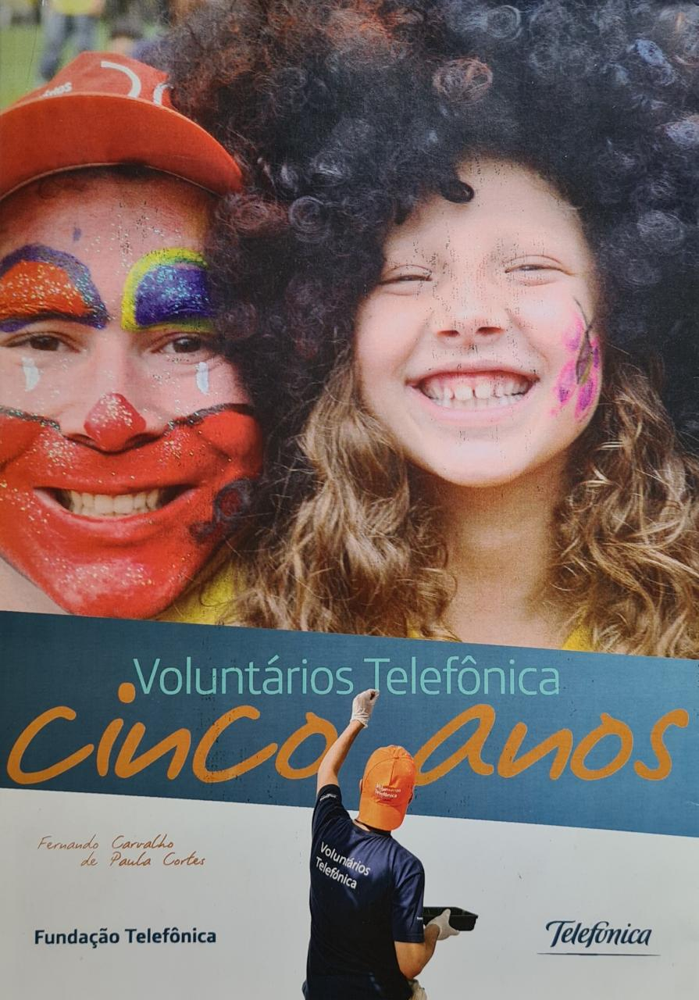

A Ordem DeMolay
A Ordem DeMolay é um grupo de jovens patrocinado e apoiado pela maçonaria desde 1919. Foi criado nos Estados Unidos da América por um Maçom da cidade de Kansas City.
Tem por objetivo criar bons cidadãos, que respeitam as leis, que convivem em harmonia com a sociedade, que auxiliam o próximo em suas necessidades básicas e educacionais e que, por meio do exemplo, sirvam como modelo a ser seguido por todos os jovens.
Faço parte da Ordem desde os 13 anos. Lá organizei e participei de campanhas de doação de alimentos e roupas, jantares beneficentes e distribuição de cestas básicas.
Fundação Telefônica VIVO
Com foco em educação como pilar essencial de transformação da sociedade, a Fundação Telefônica VIVO contribui com o desenvolvimento e inclusão digital de estudantes e educadores por meio de projetos que estimulam novas oportunidades de ensino e aprendizagem.
O Dia dos Voluntários é um projeto global que envolve os colaboradores de todas as empresas do Grupo Telefônica. Neste dia, um projeto é escolhido e tem sua sede reformada pelos voluntários. Durante a reforma os ocupantes da sede se juntão a um segundo grupo para atividades lazer.
Participação no dia dos voluntários de 2008 até 2010.

Na foto apareço do lado de uma criança que participou do projeto.
Minha Cena
O MinhaCena.Org é uma ferramenta de impacto social e educacional que propõe estímulo para melhora na escrita e leitura com a produção de ilustrações para redações de alunos de escolas públicas, privadas e ONGs de contraturno escolar com apoio de voluntários.
Neste projeto estamos criando uma plataforma on-line e eu contribuo participando do time de back-end com outros voluntários.
Art Sol
A Artsol é uma ONG com o objetivo de estimular a educação e possibilitar acessos a experiências artísticas, culturais, esportivas e de lazer
Neste projeto estamos reestruturando a plataforma on-line onde participo no front-end junto com outros parceiros voluntários.